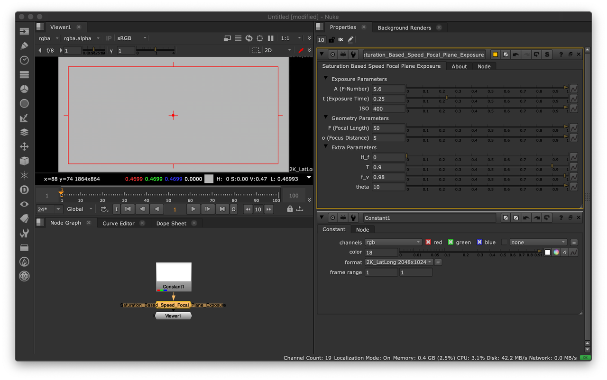

Physical Lighting Quantities: Tying Both Ends
Validation against ground truth data is an important step when implementing support for physical lighting quantities in a realtime or offline renderer.
In this post, a simple but effective method to assess that the physical camera model behaves as expected against ground truth data (or conversely) will be presented.
Digital Still Camera Exposure Model
Epic Games recently published a comprehensive blog post about auto-exposure handling in Unreal Engine 4.25. The part of most significance for this post is the mention of ISO Standard: 12232:2019.
The saturation based speed \(S_{sat}\) of an electronic still picture camera as given in ISO Standard: 12232:2019 is defined as:
\(S_{sat}=\cfrac{78}{H_{sat}}\)
where \(H_{sat}\) is the minimum focal plane exposure, expressed in lux-seconds (\(lx.s\)), that produces the maximum valid (not clipped or bloomed) camera output signal. This provides \(1/2\) "stop" of headroom (41% additional headroom) for specular highlights above the signal level that would be obtained from a theoretical 100% reflectance object in the scene, so that a theoretical 141% reflectance object in the scene would produce a focal plane exposure of \(H_{sat}\).
The focal plane exposure \(H\) in lux-seconds is given by the following equation:
\(H=\cfrac{q L t F^2}{A^2 i^2} + H_f\)
where
\(L\) is the scene luminance expressed in \(cd/m^2\)
\(A\) is the lens F-Number
\(t\) is the exposure time expressed in seconds
\(F\) is the lens focal length expressed in meters
\(I\) is the image distance expressed in meters
\(H_f\) is the focal plane flare exposure expressed in lux-seconds
-
\(q\) is the factor modeling the total lens vignetting and transmission attenuation:
\(q=\cfrac{\pi T f_v \cos^4\theta}{4}\)
with \(T\) the transmission factor of the lens, \(f_v\) the vignetting factor and \(theta\) the angle of image point off axis. For a camera focused on infinity, \(Hf<<H\), \(T=9/10\), \(\theta=10^{\circ}\), \(\cos^4\theta=94/100\), and \(fv=98/100\), \(q\) is equal to 65/100.
The adjusted focal plane exposure \(H_{SBS}\) is obtained by scaling the focal plane exposure \(H\) according to the SBS method and, optionally, scaling by the ISO arithmetic speed \(S\):
\(H_{SBS}=H\cfrac{S}{100}\cfrac{100}{78}=H\cfrac{S}{78}\)
Colour - HDRI implements the aforementioned model with Python:
>>> import colour_hdri >>> colour_hdri.saturation_based_speed_focal_plane_exposure(18, 5.6, 0.25, 400) 0.46993364546604555
Colour - Nuke offers a Gizmo/Group implementation also available on Nukepedia.
Panoramic HDRI Calibration
With a plausible DSC Exposure Model implemented, calibrated ground truth data can be imaged for verification purposes.
An Artist-Friendly Workflow for Panoramic HDRI by Lagarde, Lachambre and Jover (2016) describes a simple but effective process to calibrate a panoramic HDRI for absolute luminance. The only requirement is to measure the scene illuminance with a light meter during the HDRI capture.
The major advantage of this approach is that it is independent of the imaging device and thus does not require knowledge of its calibration constant \(K\).
The multiplying factor \(S_L\) used to convert the panoramic HDRI relative luminance values to absolute luminance values is obtained as follows:
\(S_L=\cfrac{E_{vm}}{E_{vi}}\)
where \(E_{vm}\) is the metered scene upper hemisphere illuminance in lux (\(lx\)) and \(E_{vi}\) is the upper hemisphere illuminance of the panoramic HDRI in lux, i.e. the upper hemisphere integral of the relative luminance values:
\(\int_{\Omega}{L\ cos(\theta)\omega}\)
For an equirectangular image, the solid angle \(\omega\) of a pixel is given as follows:
\(\omega=sin(\theta)\cfrac{2\pi}{w}\cfrac{\pi}{h}\)
where \(w\) and \(h\) are the width and height of the image, respectively.
Colour - HDRI implements support for absolute luminance calibration with Python:
>>> import colour_hdri >>> import numpy as np >>> RGB = np.ones([2048, 1024, 3]) >>> colour_hdri.upper_hemisphere_illuminance_Lagarde2016(RGB) >>> colour_hdri.absolute_luminance_calibration_Lagarde2016(RGB, 120000)[0, 0] array([ 38215.85392444, 38215.85392444, 38215.85392444]) >>> colour_hdri.calibration.absolute_luminance.upper_hemisphere_illuminance_Lagarde2016(RGB) 3.1400580564615663
Likewise, Colour - Nuke offers a Gizmo/Group implementation also available on Nukepedia.
Imaging the Panoramic HDRI with the Digital Still Camera Exposure Model
A free panoramic HDRI processed accurately is a rarity online. Most vendors sell either non-linear or clipped imagery, and when it is not clipped, photometric and colorimetric information is missing and because the creation process is unknown, the data cannot be trusted for scientific applications requiring physical lighting quantities.
Fortunately, Lagarde, Lachambre and Jover (2016) have published a trustworthy panoramic HDRI that will be used in this section.
Final Treasure Island panoramic HDRI merged and stitched from the original .CR2 files.
The authors have been kindly enough to send me the original .CR2 files so that I could merge and stitch them.
Merging was performed with Colour - HDRI, specifically, by using a modified version of the Merge from Raw Files example.
.CR2 file batches merged to HDRI. Note that the bottom row was captured with neutral density filters.
With the various .CR2 file batches merged, the validation process involves comparing a cherry picked .CR2 file from one of the exposure batches with the corresponding HDRI scaled to absolute luminance and imaged via the DSC Exposure Model using the camera settings of the .CR2 file.
From left to right: The HDRI scaled to absolute luminance using 51000 lux, the cherry picked .CR2 file, the HDRI scaled to absolute luminance and imaged with the DSC Exposure Model.
Conclusion
With Treasure Island, the HDRI scaled to absolute luminance is about 14% brighter (clipped luminance) than the .CR2 file. This is not perfect but considering the scaling factors involved, it is reasonably satisfactory.
Some potential source of discrepancies are:
Lack of flat-fields to correct the neutral density filter attenuation and thus some manual correction was introduced.
Illuminance measurement precision.
Sun pixel coverage is small and might introduce significant error.
Unknown parameters for the focal plane exposure equation that were left at their default values, e.g. lens attenuation values.
Other tests performed with various non-public HDRI but imaged similarly have yielded better results with less error. Importantly though, the technique is dependent on good metering of the scene upper hemisphere illuminance along with non-clipped capture and correct processing of HDR imagery.
Conversely and assuming a correctly implemented (DSC) Exposure Model, this method also allows to check if the panoramic HDRI is correctly captured and processed.
Finally, I would like to thanks Sebastien Lagarde, Sebastien Lachambre and Cyril Jover for the recurring conversations on that topic during the past few years.
Comments
Comments powered by Disqus